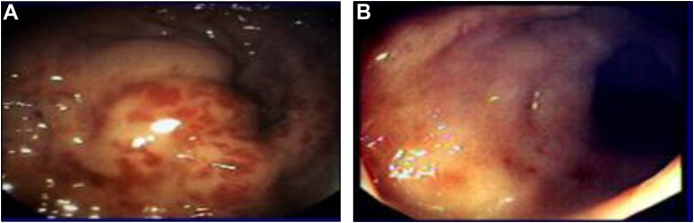
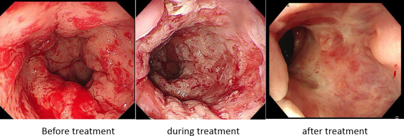

112 — Chảy máu trực tràng muộn do viêm trực tràng xạ / Chronic radiation proctopathy
Tags: pattern:xuat-huyet vung:truc-trang protocol:noi-soi-truc-trang
Mức chắc chắn (certainty): tổng hợp y văn (literature synthesis) — tự biên từ tổng quan, đoàn hệ cắt ngang và ca bệnh mở có số liệu; không gắn một ca nguyên văn duy nhất.
Câu chốt: chảy máu trực tràng ở người đã xạ tiểu khung thường là mạch giãn do xạ (telangiectasia), không phải tái phát u. Nội soi thấy niêm mạc nhợt, teo, mạch máu giãn ngoằn ngoèo trong trường chiếu là đủ chẩn đoán — không sinh thiết mù, vì mô đã xạ dễ thủng/rò.
1. Tổng quan — vì sao trực tràng chảy máu nhiều tháng đến nhiều năm sau xạ
- Hai pha:
- Cấp (trong 3 tháng đầu): viêm niêm mạc, phù, chảy máu nhẹ, tiêu chảy — phần lớn tự khỏi.
- Mạn (sau 3 tháng, thường 6–12 tháng, có thể nhiều năm–hàng chục năm): viêm nội mạc động mạch tắc nghẽn (obliterative endarteritis) → thiếu máu mạn niêm mạc → teo niêm mạc + tân mạch (telangiectasia) → mạch nông, thành mỏng, dễ vỡ → chảy máu tái diễn; xơ hóa tiến triển → hẹp, loét sâu → rò.
- TẠI SAO nội soi thấy mạch giãn trên nền niêm mạc nhợt: thiếu máu mạn kích thích yếu tố sinh mạch (VEGF) làm mọc mạch tân tạo nông dưới biểu mô; các mạch này không có lớp cơ đủ dày nên chỉ cần cọ xát/đại tiện là rỉ máu. Niêm mạc teo mất các nếp bình thường nên nhìn nhợt, bóng, dễ chảy máu khi chạm.
- Ngưỡng định lượng:
- Tần suất viêm trực tràng xạ mạn sau xạ tiểu khung: 5–20%; trong một đoàn hệ 226 bệnh nhân ung thư cổ tử cung, 38,5% có triệu chứng chảy máu trực tràng và 25,7% được xác nhận viêm trực tràng xạ.
- Chảy máu trực tràng kháng trị sau xạ được báo cáo tới 29–89,6% (khoảng rất rộng do khác định nghĩa và thời gian theo dõi).
- Thiếu máu là đặc trưng của thể telangiectasia (khác biệt có ý nghĩa, p = 0,002 trong phân loại mô bệnh 111 ca).
- Ngưỡng truyền máu: chiến lược hạn chế, Hb 7–8 g/dL ở bệnh nhân ổn định; ưu tiên bổ sung sắt trước.
2. Mẫu hình + chẩn đoán phân biệt theo vị trí (gamut)
Chảy máu trực tràng muộn sau xạ tiểu khung — gamut theo hình thái nội soi:
- Viêm trực tràng xạ mạn (telangiectasia) — mạch giãn nông, niêm mạc nhợt, trong trường chiếu, không khối.
- Tái phát u trực tràng/ống hậu môn — khối loét, bờ cứng, dễ chảy máu, ngoài vùng xạ hoặc lệch.
- Loét/rò do xạ — ổ loét sâu, có thể rò trực tràng–âm đạo/bàng quang, đau, sốt.
- Ung thư thứ phát do xạ — hiếm, tiềm tàng 10–20 năm, tổn thương khu trú, cần sinh thiết có chọn lọc.
- Bệnh trĩ/angiodysplasia/viêm túi thừa — mạch giãn nhưng ngoài trường xạ, phân bố khác.
- Viêm đại tràng thiếu máu cục bộ — đau bụng + tiêu chảy máu, phân bố theo bờ mạch.
- Chảy máu miệng nối/loét sau mổ — tiền sử cắt nối, thời điểm gần mổ.
Gợi nhớ R-A-D-I-S: Radiation telangiectasia, Angiodysplasia/hemorrhoid, Diverticular/ischemic, Iatrogenic (anastomosis), Second malignancy/recurrence.

Nội soi: (A) thành trực tràng chưa điều trị — mạch giãn (vascular ectasia) nổi rõ trên nền niêm mạc viêm; (B) sau điều trị — tổn thương giảm rõ. Nguồn: Gastro Hep Advances 2023 (PMC11308657), CC BY 4.0 — ảnh nguyên bản.3. Bảng so sánh phân biệt (ma trận đối chiếu)
| Thực thể (entity) | Hình ảnh nội soi/CT điển hình | Chốt vào (rule-in) | Chốt loại (rule-out) | Gợi ý xác nhận |
|---|---|---|---|---|
| Viêm trực tràng xạ mạn | Niêm mạc nhợt, teo, mạch giãn ngoằn ngoèo, dễ chảy máu khi chạm; CT: thành trực tràng dày đối xứng, xơ quanh trực tràng | Trong trường chiếu + mạch giãn + không khối | Khối loét bờ cứng, hạch, dày lệch tâm → nghĩ u | Nội soi ống mềm; không sinh thiết mù; so bản đồ liều xạ |
| Tái phát u | Khối loét bờ cứng, dễ chảy máu, hẹp lệch tâm; CT: khối + hạch + xâm lấn mỡ | Khối + hạch + dày không đối xứng | Niêm mạc nhợt đối xứng, không khối → xạ lành | Sinh thiết có chọn lọc, MRI trực tràng, PET-CT |
| Loét/rò do xạ | Ổ loét sâu, có thể thấy lỗ rò; CT: khí/dịch ngoài lòng, đường rò | Loét sâu + khí ngoài lòng + dịch | Chỉ mạch giãn nông, không loét sâu → chưa rò | CT có cản quang, soi bàng quang/âm đạo, MRI |
| Ung thư thứ phát do xạ | Tổn thương khu trú, loét, cứng; tiềm tàng 10–20 năm | Tổn thương khu trú mới + tiền sử xạ xa | Mạch giãn lan tỏa đối xứng → lành | Sinh thiết đúng vị trí, CT/MRI |
| Trĩ/angiodysplasia | Mạch giãn nhưng ngoài trường xạ, phân bố theo búi trĩ/niêm mạc lành | Vị trí ngoài vùng xạ + không teo niêm mạc | Lan tỏa trong trực tràng đã xạ → viêm xạ | Nội soi, hỏi tiền sử xạ |
4. Protocol nội soi + phân độ + thang điều trị
- Nội soi trực tràng ống mềm (flexible sigmoidoscopy) là tiêu chuẩn chẩn đoán: xác định vị trí, mức lan, mức độ mạch giãn, có loét/rò không. Không cần chuẩn bị đại tràng toàn bộ nếu chỉ soi trực tràng; thụt tháo nhẹ trước soi.
- Sinh thiết: chỉ khi nghi u/thứ phát; tránh sinh thiết sâu mô đã xạ (nguy cơ thủng, rò, chảy máu không cầm). Mô xạ lành cho hình ảnh xơ, mạch giãn — không đặc hiệu để chẩn đoán ung thư.
- Phân độ muộn RTOG/EORTC (late radiation morbidity):
| Độ | Biểu hiện |
|---|---|
| 1 | Tiêu chảy nhẹ, đau quặn nhẹ, < 5 lần đại tiện/ngày, rỉ máu nhẹ |
| 2 | Tiêu chảy vừa, > 5 lần/ngày, chất nhầy nhiều hoặc chảy máu từng đợt |
| 3 | Tắc hoặc chảy máu cần phẫu thuật |
| 4 | Hoại tử, thủng, rò |
- Thang nội soi Zinicola (2–5 điểm): phân bố mạch giãn (1–2) + diện tích tổn thương (1–2) + máu tươi (0–1); 2 = nhẹ, 3 = vừa, 4–5 = nặng. Dùng để theo dõi trước–sau điều trị.
- Thang điều trị (bậc thang):
- Sắt uống/truyền + truyền máu nếu Hb < 7–8 g/dL; ngừng/giảm thuốc chống đông nếu phù hợp.
- Sucralfate thụt, metronidazole, acid aminocaproic — bằng chứng yếu, dùng hỗ trợ.
- Đốt argon plasma (APC): hiệu quả 70–100%, làm sạch máu 80–90% trong các series; 1–3 lần, cách 4–6 tuần; biến chứng loét, hẹp, thủng < 1%.
- Formalin 4% tại chỗ (2–3 phút): hiệu quả khoảng 81% trong series của Biswal; biến chứng đau, hoại tử, hẹp.
- Oxy cao áp (hyperbaric oxygen): đáp ứng tới ~90% trong một số series; dùng cho thể kháng trị.
- RFA/cryotherapy: RFA đạt thành công 83,3% (15/18), điểm nội soi trung bình 3,44 → 1,06 (p < 0,001), không thủng; đau hậu môn nhẹ.
- Phẫu thuật (proctectomy + stoma): biến chứng cao, chỉ khi thất bại tất cả và chảy máu đe dọa tính mạng.
- An toàn APC — bắt buộc nhớ: đã có 12 ca nổ đại tràng trong y văn, một nửa thủng phải mổ; yếu tố nguy cơ là chuẩn bị đại tràng kém/thụt tháo đơn thuần (khí hydro/methane tích tụ). Phòng ngừa: uống PEG đủ liều, tránh bơm khí dư, dùng lưu lượng argon thấp.
flowchart TD
A[Chảy máu trực tràng muộn sau xạ tiểu khung] --> B[Nội soi trực tràng ống mềm]
B --> C{Có khối loét, hẹp lệch tâm?}
C -->|Có| D[Sinh thiết có chọn lọc + MRI/PET]
C -->|Không| E[Telangiectasia trong trường xạ]
E --> F[Điều trị bậc thang: sắt/truyền máu]
F --> G{Chảy máu còn?}
G -->|Không| H[Theo dõi 3-6 tháng]
G -->|Có| I[APC 1-3 lần]
I --> J{Còn chảy máu?}
J -->|Không| H
J -->|Có| K[Formalin 4% hoặc HBO]
K --> L{Còn chảy máu?}
L -->|Có| M[RFA/cryo]
M --> N{Thất bại + đe dọa tính mạng?}
N -->|Có| O[Phẫu thuật + stoma]
5. Biến thể bình thường và cạm bẫy
- Đừng sinh thiết mọi mạch giãn: mô đã xạ mỏng, dễ thủng/rò; chẩn đoán bằng bối cảnh + hình thái nội soi.
- Đừng gọi tái phát khi chỉ thấy niêm mạc nhợt + mạch giãn: tái phát cần khối/hạch/dày lệch tâm; gọi nhầm dẫn tới mổ oan trên mô đã xạ.
- Chảy máu có thể từ trĩ/angiodysplasia đi kèm: soi tới trên vùng xạ, tìm nguồn ngoài trường chiếu.
- Thiếu máu thiếu sắt mạn: kiểm ferritin, không chỉ dựa Hb; bổ sung sắt trước khi truyền máu.
- APC ở đại tràng chưa làm sạch: nguy cơ nổ — luôn chuẩn bị PEG đầy đủ, kể cả khi chỉ đốt trực tràng.
- Thời điểm: chảy máu có thể xuất hiện nhiều năm sau xạ; bệnh nhân có thể quên — hỏi tiền sử xạ trị vùng chậu.
- Đừng nhầm với bệnh Crohn/viêm loét đại tràng: phân bố trong trường chiếu, không lan liên tục ngoài vùng xạ, không có tổn thương miệng/ruột non đi kèm.
6. Tự lượng giá — Blind Quiz
Ca 1 — Nam 70 tuổi, xạ trị ung thư tiền liệt tuyến 2 năm trước, đi cầu ra máu tươi tái diễn, Hb 9,2 g/dL. Nội soi trực tràng:
- Hỏi: mô tả tổn thương? Chẩn đoán? Có nên sinh thiết không? Ba bước điều trị đầu?
Bấm để hiện đáp án (findings + chẩn đoán)
- Dấu hiệu: niêm mạc nhợt, teo, nhiều mạch máu giãn ngoằn ngoèo (telangiectasia) nông, dễ chảy máu khi chạm; không thấy khối loét bờ cứng.
- Chẩn đoán: viêm trực tràng xạ mạn (chronic radiation proctopathy) — mạch giãn trên nền thiếu máu mạn và tân mạch, trong trường chiếu.
- Sinh thiết: không — tổn thương đối xứng, không khối; sinh thiết sâu mô đã xạ có nguy cơ thủng/rò.
- Ba bước đầu: (1) bổ sung sắt/truyền máu nếu Hb < 7–8 g/dL; (2) APC 1–3 lần cách 4–6 tuần; (3) nếu thất bại → formalin 4% hoặc HBO.
- Nguồn ảnh: Gastro Hep Advances 2023 (PMC11308657), CC BY 4.0.
Ca 2 — Cùng bệnh nhân, chảy máu tái phát sau 2 lần APC. Nội soi trước – trong – sau RFA:

- Hỏi: hình nào là trước điều trị? Vì sao chọn RFA thay vì APC lần 3? Kết quả và biến chứng cần biết?
Bấm để hiện đáp án
- Trước điều trị: khung trái — niêm mạc viêm đỏ, nhiều mạch giãn và máu tươi; giữa là trong khi đốt; phải là sau điều trị — niêm mạc lành, giảm mạch giãn.
- Vì sao RFA: tổn thương lan rộng, APC lặp lại không kiểm soát được; RFA phủ diện rộng hơn mỗi lần, ít biến chứng.
- Kết quả: thành công 83,3% (15/18), điểm nội soi 3,44 → 1,06 (p < 0,001), không thủng; đau hậu môn nhẹ là biến chứng thường gặp.
- Lưu ý: đây là series nhỏ (18 ca), theo dõi trung vị 20 tháng — chưa thay thế được APC là lựa chọn đầu tay.
- Nguồn ảnh: Journal of Gastrointestinal Cancer 2026 (PMC13102748), CC BY-NC-ND 4.0 — ảnh nguyên bản, không crop/ghép.
Bài liên quan chéo
- 100 – Tổng quan hệ Bụng
- 111 – Tắc ruột non do xơ hóa sau xạ trị tiểu khung
- 1665 – Rò trực tràng–âm đạo sau xạ trị
- 162 – Tắc ruột non/già, quai kín & thiếu máu mạc treo
Không dùng để chẩn đoán độc lập khi chưa có người hướng dẫn.